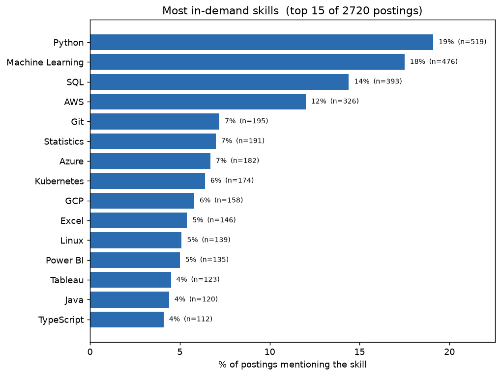
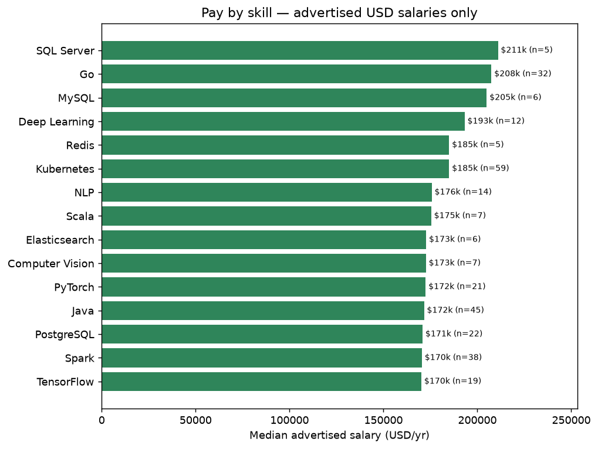
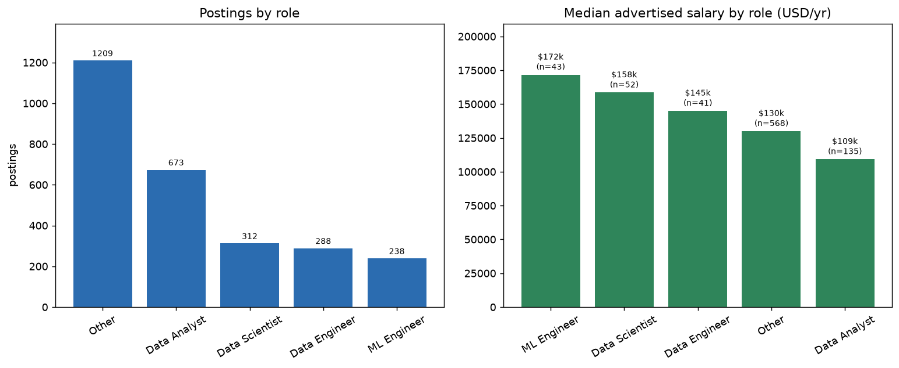
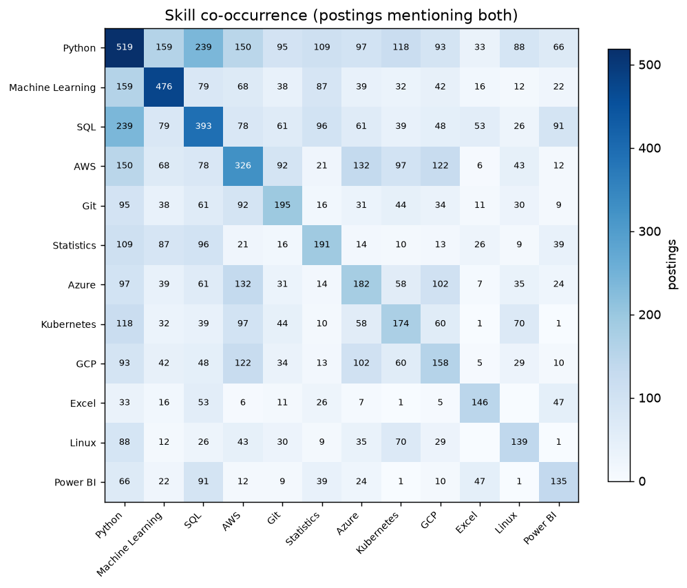
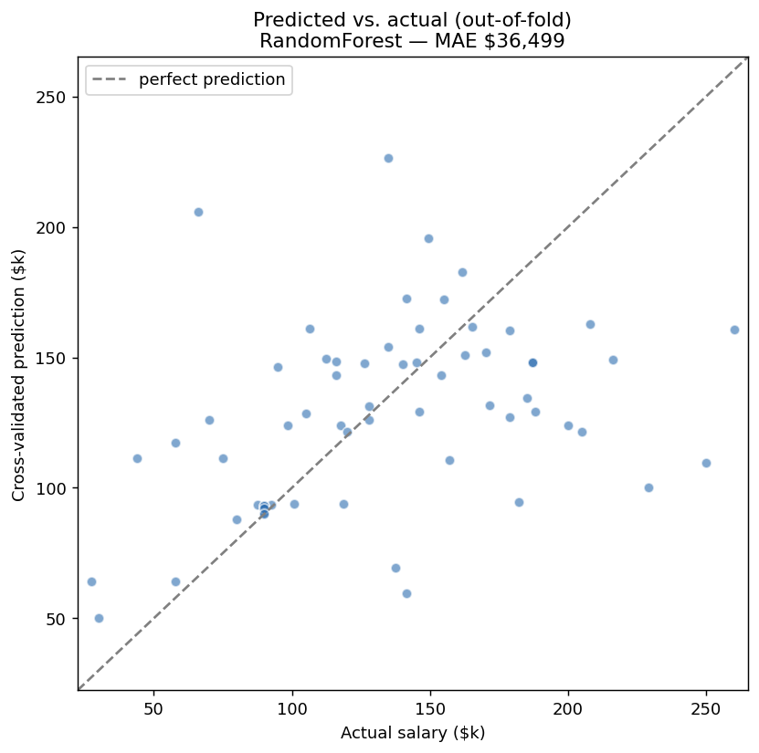

An end-to-end pipeline that collects data-job postings from 6 public APIs, extracts the skills and salaries hidden in their text, and compares markets — including a focus on Indonesia vs. remote-international roles.
From 2,367 postings across 5 markets and 6 sources, accumulated by a weekly scheduled collector. Directional, not definitive — they sharpen as the data grows.
The markets want different things — useful if you're deciding which to target.
| Indonesia (local, n=33) | Remote-international (n=1,362) |
|---|---|
| SQL 61%, Python 58% | Python 28%, SQL 19% |
| Tableau 30%, Power BI 27% BI-heavy | AWS 18%, Git 13% cloud/eng |
| Statistics 33%, ETL 27% analyst core | Machine Learning 14%, Kubernetes 11% |
Indonesian roles lean analyst / BI (SQL + a BI tool are near-mandatory); remote roles lean Python + ML + cloud.
Generated reproducibly from the warehouse (python -m src.figures).




693 postings carry a genuinely advertised salary, from 293 companies. The interesting part is where the accuracy came from.
| Model | MAE | R² (grouped) |
|---|---|---|
| Baseline: predict the median | $50.4k | -0.02 |
| Role + skills only | $46.5k | 0.12 |
| + location / source / market | $37.4k | 0.37 |
| + description features | $37.0k | 0.38 |
| Gradient boosting | $39.9k | 0.27 |
| Blend of two ridge models | $33.5k | 0.46 |
R² went from 0.12 to 0.46 without changing the algorithm.
Every point came from data work: normalizing currencies and pay periods (+26% usable rows),
using the location, source and category columns that were
already collected but never read, and mining the ~6,600-character job descriptions
for required years of experience. Gradient boosting lost to the linear model.

A leak I found in my own evaluation.
293 companies supply those 693 postings, so a random train/test split routinely puts the same
employer on both sides and the model simply memorises that company's pay band. Switching to
GroupKFold by company lowered the headline R² from 0.56 to 0.46.
The lower number is the real one, and both are reported side by side.
Collect → normalize → extract skills → analyze → model → dashboard. Tested (51 unit tests, CI on every push) and reproducible.
R vs "R&D", Java vs JavaScript, Excel vs the verb).Honest by design: Adzuna-predicted salaries are excluded from pay stats; demand is audited per source (some APIs truncate descriptions); currency conversion uses a dated, static rate table so any chart can be reproduced later; salaries outside a plausible band are counted in an audit rather than silently dropped; and Indonesian postings rarely advertise salary — all stated openly rather than papered over.